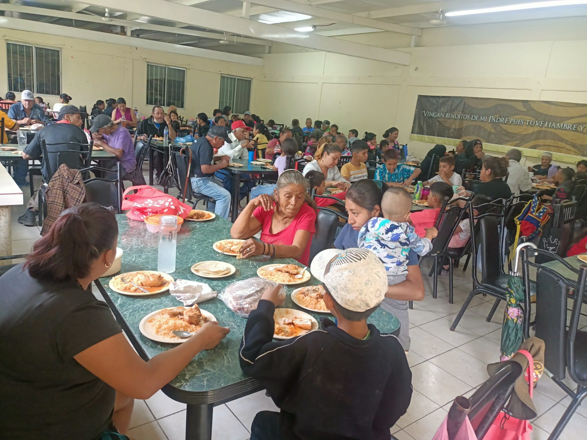
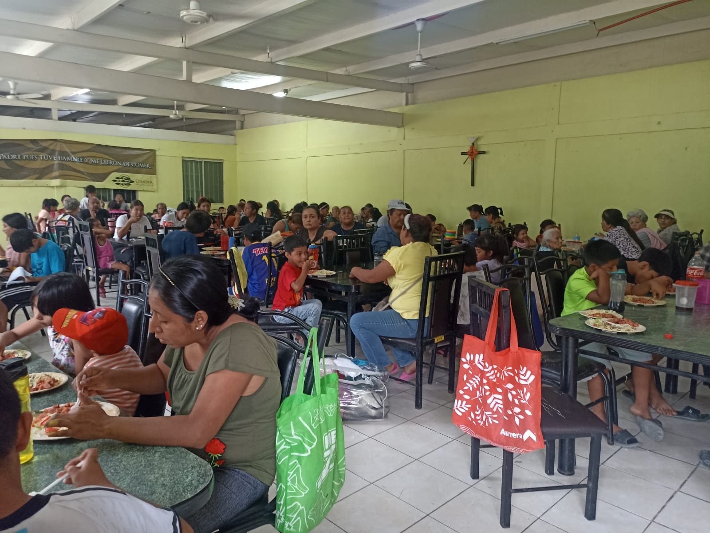

Sede
Escobedo
Sirviendo con amor y dignidad en el corazón de Nuevo León.

Sirviendo con amor y dignidad en el corazón de Nuevo León.
Desde que abrimos nuestras puertas, se han servido más de 37,500 porciones de alimento a personas en situación vulnerable de zonas de inseguridad de Escobedo.
Beneficiamos a colonias como Pedregal del Topo, Las Cucharas y Pedreras. Además, desde 2005, más de 150 personas han terminado su educación básica en nuestra Aula Polivalente adjunta.
Impacto
Comunitario
Servicio
Lun-Sab
Apoyo
Gratuito



